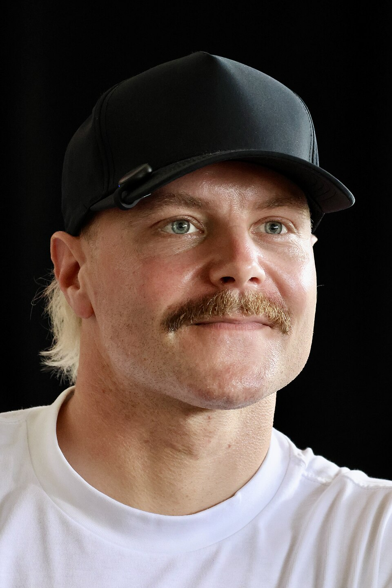

Sergio Perez is one of the most experienced drivers on the Formula 1 grid and one of the most beloved figures in the sport, particularly across Latin America where his fanbase is enormous. The Mexican driver made his debut in 2011 and spent years delivering exceptional performances for midfield teams before Red Bull finally gave him the car to fight at the front. He won multiple races for Red Bull and played a crucial supporting role in their championship winning years. After being dropped at the end of 2024, he returns to the grid with Cadillac in 2026 with something to prove and plenty left in the tank.
Valtteri Bottas
Valtteri Bottas is one of the most experienced drivers in Formula 1 history, with over 200 race starts to his name. The Finnish driver spent five seasons at Mercedes alongside Lewis Hamilton, winning ten races and finishing runner up in the championship twice. He was consistently fast but often found himself in Hamilton's shadow. A move to Alfa Romeo gave him a fresh start and he became a fan favourite for his self deprecating humour and genuine likability. After a year as Mercedes' reserve driver in 2025, Bottas joins Cadillac's debut season, bringing a wealth of knowledge that a new team will find invaluable.

Driver History
As a brand new team making their debut in 2026, Cadillac don't yet have a driver history to speak of — they are writing the first page of it right now. But the team have been smart in their choices, assembling two of the most experienced drivers available in Perez and Bottas. Between them they bring over 500 Formula 1 race starts, multiple race victories, and the kind of technical feedback and racecraft that can shape a new team's development in ways that no rookie pairing ever could. The history of Cadillac Formula 1 starts here, in 2026, at the Australian Grand Prix in Melbourne.